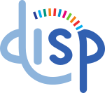

HarmonicAI développe un cadre multi-objectifs pour concevoir des systèmes d'IA en santé qui soient simultanément explicables, équitables et respectueux de la vie privée.
ISO/IEC 22989 · Cycle de vie - ISO/IEC 24027 · Biais
Biais issus des caractéristiques, de la distribution ou du traitement des données collectées.
Biais introduits par les choix algorithmiques, architecturaux et d'optimisation.
Biais liés aux décisions, jugements ou pratiques des acteurs impliqués dans la conception et l'usage.